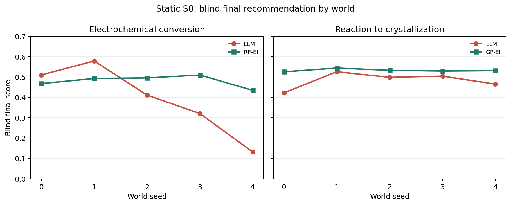
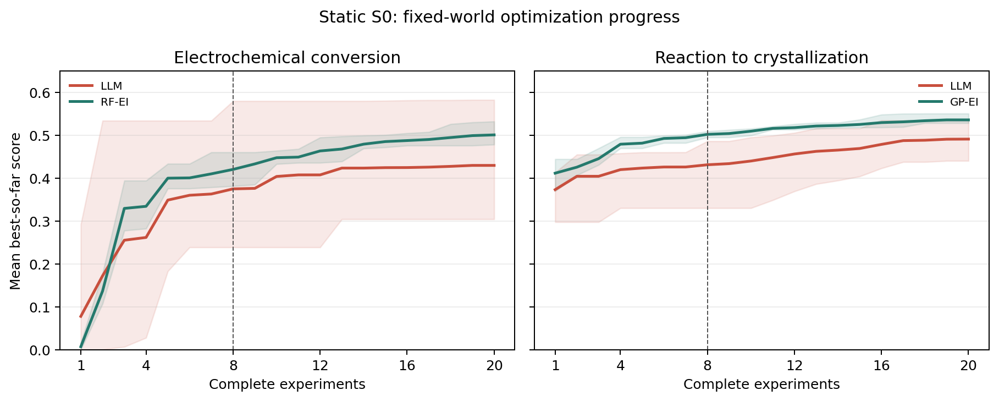

Confirmatory Benchmark Tasks: Design, Preregistration, and Status¶
Showcase Worlds demonstrate platform breadth; Confirmatory Benchmark Tasks carry confirmatory claims. They are no longer described by the same “flagship” label.
Current source binding
RC28 Gate A formally passed on its frozen source. The 2026-07-27 static-S0
and task-contract updates changed the current source fingerprint. The RC28
numbers remain historical formal results, but their current binding is
stale and benchmark_ready=false until recertification.
2026-07-27 formal static-S0 results¶
Both confirmatory tasks have completed five-world formal evaluations with
gpt-5.6-sol high under the same static scientific-optimization design. Each
world has 20 complete exploration experiments, one separate final synthesis,
three frozen predictive interventions, three paired blind incumbent
replicates, and three paired blind recommendation replicates. Every physical
experiment replayed exactly.
| Task | LLM blind mean, 95% CI | Best classic calibration mean | Paired LLM − classic, 95% CI | World wins | Predictive |
|---|---|---|---|---|---|
| Electrochemical Conversion | 0.3902 [0.1732, 0.6072] | RF-EI 0.4798 | -0.0896 [-0.2896, 0.1104] | 2 win / 3 loss | 29/45 (64.4%) |
| Reaction to Crystallization | 0.4829 [0.4326, 0.5332] | GP-EI 0.5324 | -0.0495 [-0.0933, -0.0056] | 0 win / 5 loss | 20/45 (44.4%) |
The statistical unit is the world seed. Five algorithm seeds are averaged within each world before comparison. Intervals are two-sided 95% Student-t descriptive intervals over five world clusters. The best classic calibration family is selected from six candidates by aggregate blind mean, so these are not preregistered superiority tests.

All ten best exploration points occurred after experiment 10, so the 20-experiment budget supplied material search opportunity. From experiment 8 to experiment 20, mean LLM best-so-far increased from 0.3749 to 0.4297 in electrochemistry and from 0.4311 to 0.4911 in crystallization.

The model can improve a fixed-world process, but its cross-world reliability and world understanding remain below structured black-box optimizers. All ten final submissions were tested methods: eight had zero paired gain, two had small negative gain, and none improved the incumbent. Separate final synthesis therefore provides an explicit submission and explanation interface, but has not yet demonstrated better experimental conditions.
Static S0 is the current research priority: closed-loop optimization in a fixed but unknown system. The RC28 material below is a historical environment identifiability certificate on frozen source, not the current participant roadmap. Hidden changepoints, mechanism replacement, and world-change experiments are deferred until they have a realistic drift model and a separate research question.
Optimization designs across all 15 tasks¶
The other 13 tasks do not require costly model runs in this release, but their optimization designs are more than registry entries. All 15 tasks now have a versioned complete-experiment adapter, physical coordinate schema, fixed measurement slots, final-assay feedback, and safety/cost boundaries. The generator perturbs every coordinate and executes the midpoint recipe at world seed 0: 15/15 pass, with zero dead coordinates and zero unresolved formalization blockers.
The three purification tasks use 16 independent controls and 22 compiled operations spanning reaction, extraction, phase separation, washing, drying, concentration, and transfer. Distillation uses 13 controls, with evaporation and distillation temperature/time independently adjustable. This is executable design evidence, not a formal ranking on the 13 non-confirmatory tasks.
Two orthogonal sets¶
The homepage presents four Showcase Worlds: partition discovery, reaction-to-crystallization, reaction-to-distillation, and flow-reaction optimization. They demonstrate the experimental-reasoning and physical-chemistry feedback supported by ChemWorld.
The mechanism-adaptation protocol currently has two Confirmatory Benchmark Tasks:
| Confirmatory task | Hidden change families | Intervenable diagnostic coordinates | Main observations |
|---|---|---|---|
| Reaction to Crystallization | rate law, reaction topology, catalyst mapping | catalyst dose, temperature/time, catalyst choice | HPLC, final assay, task score |
| Electrochemical Conversion | constitutive law, solvent mapping, electrolyte-profile mapping | potential, current, time, solvent, electrolyte profile | UV-Vis, final assay, task score |
A showcase card is not confirmatory evidence, and a confirmatory task need not be
one of the four homepage cards. Some internal flagship identifiers remain for
API compatibility; they no longer define the scientific taxonomy.
Current state machine¶
| State | Current value |
|---|---|
| Environment design candidate | passed |
| Semantic protocol audit | historical RC28 passed, 25/25; current binding stale |
| A1 physical validity | historical RC28 passed, 83/83 design checks; current binding stale |
| A2 controlled identifiability | historical RC28 passed, 4,896/4,896 receipts; current binding stale |
| A3 online attainability | historical RC28 passed, 2,016/2,016 receipts; current binding stale |
| Static-S0 Participant Agent | five-seed formal execution and replay complete for both confirmatory tasks |
| Mechanism-adaptation Participant Gates B–E | deferred research extension; Flash Direct/Stateful S1/S2 each achieved 0/4 autonomous completion, formal matrix not started |
| Private-E environment confirmation | eligible, not yet executed |
| Private-A participant-Agent confirmation | sealed pending participant freeze |
| Benchmark ready | false, pending current-source Gate A recertification |
| Evidence complete | false |
| Publication ready | false |
The 25 semantic checks and 83 design checks are audit checks, not 108 independent
pieces of scientific evidence. RC28 completed formal A2/A3 on its frozen source and released both
results in one joint decision: gate_a_pass=true and benchmark_ready=true.
This certifies that source's physical validity, budgeted identifiability,
and online attainability prerequisites. It does not mean that DeepSeek or any
other participant Agent passed Gates B–E, and it does not make
evidence_complete or publication_ready true.
RC28 formal Gate A results¶
A2: controlled identifiability within budget¶
Each budget contains 1,440 task × truth × world-cluster units. The frozen
primary budget is k=5:
| Budget | Active-oracle top-1 (95% CI) | Fixed-decoder top-1 (95% CI) | Family intersection |
|---|---|---|---|
| 2 | 93.75% (92.38–94.89) | 94.44% (93.14–95.51) | fail |
| 4 | 98.47% (97.70–98.99) | 95.35% (94.13–96.32) | decoder fail |
| 5 (primary) | 98.26% (97.45–98.82) | 98.26% (97.45–98.82) | pass |
The active oracle already attained high sampled-cohort accuracy at k=4, but
four electrochemical actions cannot provide a complete structural witness for
the five-action relation union, and the fixed decoder's family intersection
still failed. The formal certificate therefore remains correctly bound to
k=5; the favorable k=4 oracle result cannot retroactively redefine the
primary gate.
A post-run overlap audit found that all 25 k=5 oracle and decoder errors
coincide. This is not prediction-field copying: the two electrochemical
five-action batches differ. For Reaction to Crystallization, however, the
information maximum is exactly the fixed first-five-action batch, so all 720
trials reuse the same paired contrast. The fixed decoder has always had
controls_gate=false; it is an auxiliary consistency check, not a second
fully independent A2 replication certificate.
At k=5, recall was 100% for the electrochemical constitutive, solvent-map,
electrolyte-profile-map, and no-change truths. Reaction-to-crystallization
recall was 98.33% for rate law, 98.89% for topology, 88.89% for material
mapping, and 100% for no change. The weakest material-map 95% lower bound was
83.46%, above the frozen 70% family bound.
A3: online reference, detection, and attribution¶
The frozen reference policy receives no change time, minimum stable prefix, truth, or reference certificate. Its overall adaptation curve is:
| Post-change k | Detection recall | AUROC | Conditional FPR | Mean Brier | Conditional attribution | End-to-end success |
|---|---|---|---|---|---|---|
| 1 | 83.10% | 0.9703 | 0.84% | 0.0641 | 88.65% | 73.06% |
| 2 | 93.46% | 0.9965 | 1.12% | 0.0446 | 95.50% | 88.52% |
| 4 | 98.88% | 0.9987 | 1.96% | 0.0331 | 97.54% | 95.65% |
| 8 | 99.35% | 0.9990 | 2.80% | 0.0263 | 98.03% | 96.57% |
The table's FPR is conditional on a sufficient reference; the unconditional
no-change horizon FPR was 3.33%. Overall reference sufficiency was 99.17%, and
the observed-event mean delay was 1.233 post-change experiments. At k=8,
end-to-end success was 98.33% for electrochemical conversion and 94.81% for
reaction-to-crystallization. All six changed families passed separately; the
weakest was the reaction-to-crystallization material map at 93.33%.
These numbers certify benchmark attainability demonstrated by the frozen reference diagnostic policy, not participant-Agent capability. Gates B–E require an independently frozen method, prompt, runner, sample size, and provider-cost contract.
What A1, A2, and A3 certify¶
| Level | Certification subject | Purpose |
|---|---|---|
| A1 | physical world and hidden intervention | Is the change real, single-axis, reachable, and visible in public observations? |
| A2 | controlled oracle/decoder | Are candidate families distinguishable under controlled, budget-matched experiments? |
| A3 | frozen reference diagnostic policy | Can one compliant online policy build a reference, detect a hidden change, and identify its family without receiving change time or truth? |
| Gates B–E | evaluated participant Agent | Detection, feedback use, adaptation/recovery, and procedural autonomy |
A DeepSeek, Claude, or other participant failure therefore cannot redefine A3 or make the environment automatically “unidentifiable.” A3 is formally the Online attainability certificate. Participant Agents begin at Gate B.
Calibrated online-change semantics¶
truth change time ∈ {never, 6, 8, 10}
total experiment horizon = 18
relative checkpoints k ∈ {1, 2, 4, 8}
τ=6 means exactly that the first six complete experiments use the old world;
experiment 7 is the first eligible changed-world experiment. The policy sees
only the total horizon and that the world may remain stable or change at an
unspecified time. The minimum stable prefix, candidate change times, truth,
reference certificate, pseudo-checkpoint, and relative checkpoint are hidden.
never is a first-class truth state. Its evaluator pseudo-checkpoint creates no
runtime event and changes no instance identifier, metadata, reset rule, or
random-number stream.
A3 reference sufficiency is not a six-ID checklist¶
The frozen six-action recipe is a reproducible canonical witness set, not the only valid answer. The certificate is based on relation closure:
- varied fields and controlled backgrounds satisfy the declared relation;
- rate-law or constitutive-law low/pivot/high levels are formed;
- topology and material-map same-background contrasts are closed;
- observable signatures have non-saturated fit information; and
- reference age remains inside the frozen limit.
A future policy may use different continuous doses or scan points. It does not
fail merely because it did not call design-00 through design-05, provided
that it closes the same relations and passes predictive adequacy.
Predictive adequacy avoids circular certification¶
Development data freeze only the feature encoding, predictive family, action selection rule, and thresholds. Each A3 campaign estimates nuisance reference parameters from its own pre-change observations using leave-one-experiment-out cross-fitting. A held-out old-world observation cannot fit its own parameters; post-change observations and the realized family label are prohibited. Standardized error, predictive log score, and 95% prediction-interval coverage are retained.
Changed and never use different denominators¶
Let R denote reference sufficiency, D_change a change alarm, and A correct
family attribution.
Changed campaigns report:
P(R | changed)
P(D_change | R, changed)
P(A | D_change, R, changed)
P(R ∧ D_change ∧ A | changed)
No-change campaigns report:
P(R | never)
P(no false alarm | R, never)
FPR_horizon = P(ever alarms within the eight-experiment window | never)
Attribution is undefined for never, so no never row enters an attribution
denominator. Reference failures leave only the conditional attribution
denominator and remain failures in the changed end-to-end rate.
Time-resolved detection¶
Recall(k), AUROC(k), Brier(k), and matched no-change FPR(k) are reported at
k={1,2,4,8}. The primary Brier score first weights changed and never equally,
then averages the four checkpoints equally.
T_D = min{k : p(change) >= 0.5}
A changed campaign not detected by k=8 is right-censored. It is not assigned
8 or infinity and is not deleted. Horizon FPR records whether a threshold was
ever crossed, so a later posterior decline cannot erase an earlier false alarm.
Sample size and independence¶
RC28 preserves the RC27 worlds, cohorts, and statistical design and freezes:
- 180 independent world-seed clusters per task/family in A2, A3, Private-E, and Private-A;
- exactly 60 clusters per
τ∈{6,8,10}for each changed family; - 180
neverclusters per task; - five provider repeats per paired cell as nested technical repeats, not independent samples; and
task_id + world_seedas the cluster-bootstrap unit.
With 30 clusters and true reference success 0.90, the probability of satisfying the Wilson lower-bound rule is only about 0.18. At 180 clusters it is about 0.964. Under true recall 0.90 and FPR 0.05, the frozen cluster-bootstrap pass probabilities are about 0.978 and 0.808. Power remains limited if true reference success is only 0.85; the audit states that limitation explicitly.
Strictly paired no-change controls¶
Each changed/never twin shares initial state, world seed, pre/post session boundary, reset rule, the complete pre-change action schedule, and the observation-noise key on every shared semantic coordinate. Adaptive post-change paths may have different coordinate sets; every coordinate shared by both arms must still have the same key. The pseudo-checkpoint has no runtime side effect, and no reset or instance signal reaches the policy.
RC28 relational-budget certificate, execution hardening, and Agent context¶
RC27 formal execution exposed a design-audit gap: the electrochemical task needs
five distinct actions to close the constitutive low/pivot/high relation and the
separate solvent and electrolyte-profile pairs. A primary budget of four is
therefore impossible. RC28 retains the diagnostic A2 checkpoints k={2,4} and
adds the minimal feasible k=5 primary certificate. A3 remains unchanged at
k={1,2,4,8} with an eight-experiment horizon. The 83-check design audit now
records a minimum relation-union witness per task and validates it before any
formal scheduler.
RC28 retains the earlier execution hardening: 576 A3 predictive-fit jobs plus 1,440 online trials equal 2,016 receipts, while the three A2 checkpoints produce 4,896 receipts. It also retains write-once trial receipts, missing-only resume, a separate infrastructure-attempt ledger, semantic-coordinate observation noise, an A3 metric embargo until A2 finishes, one joint A2/A3 decision artifact, and separate Private-E and Private-A confirmation tracks.
Participant Agents receive chemworld-compact-decision-context-0.3. Fifty
worst-legal offline fixtures set the development caps: a shared 2,050-token
environment view, 3,600 total estimated tokens for Direct, and 4,150 for
Stateful v0.4. The default prompt contains the task and lifecycle, current budget and metrics, processed measurement summary, active
constraints, short memory, and legal parameter signatures. Raw spectrum arrays,
replicate curves, duplicate observation views, constitution checks, and
Git/provider/ledger metadata remain in audit artifacts, not the decision prompt.
Historical spectra are available on demand by public spectrum_id.
Stratified gate rule¶
A3 uses an intersection:
- overall pass;
- Reaction to Crystallization pass;
- Electrochemical Conversion pass;
- every changed family pass; and
- macro-average pass.
The pooled micro-average is supplemental. An easy task or family cannot conceal a locally unattainable one.
Evidence boundary for Gates B–E¶
The current design audit found no Gate C–E prerequisite confusion analogous to the old A3 error, but their empirical validity remains untested:
- Gate B evaluates participant-Agent temporal detection and calibration;
- Gate C must still validate identical-prefix feedback pairs and provider noise;
- Gate D must still validate frozen, adaptive, and oracle policy definitions; and
- Gate E must still establish that assisted history does not contaminate later autonomous runs.
A semantic-audit pass is not an empirical Gate C–E pass.
The first formal experiment uses a four-cell 2×2 factorial design: Pro and
Flash backends each run direct reactive and stateful scientific scaffolds.
This estimates backend, scaffold, and interaction effects while requiring
only one new stateful scientific scaffold. ReAct and planning-memory are
deferred to targeted ablations or supplements and do not block the first
formal run. The current live_llm_a/live_llm_b pilot changes backend,
thinking configuration, and controller role simultaneously, so it cannot
estimate a clean backend or scaffold effect.
Single preregistration entry point¶
Before A2/A3, the sole controlling file is:
configs/benchmark/mechanism-adaptation-preregistration-v0.3.0-rc28.json
It binds source commit, protocol/plan/relation/scorer hashes, cohort namespaces, sample size, reference-policy version, thresholds, checkpoints, bootstrap, stratification, failure handling, exclusions, stopping, and private-unseal conditions. Any bound change creates a new RC and cannot reinterpret existing results.
Audit entry points¶
- Protocol:
configs/benchmark/mechanism_adaptation_v0.3.0_rc28.json - Gate A plan:
configs/benchmark/mechanism_adaptation_gate_a_v0.3.0_rc28.json - Preregistration:
configs/benchmark/mechanism-adaptation-preregistration-v0.3.0-rc28.json - Sample-size audit:
mechanism-adaptation-sample-size-audit-v0.3.0-rc28.json - Relation graph:
mechanism-adaptation-diagnostic-relation-graph-v0.3.0-rc28.json - Semantic audit:
confirmatory-task-semantics-audit-rc28.json - Release qualification:
mechanism-adaptation-release-qualification-v0.1-rc28.json - A2 structural receipt:
mechanism-adaptation-a2-structural-receipt-v0.1-rc28.json - A3 structural receipt:
mechanism-adaptation-a3-structural-receipt-v0.1-rc28.json - Joint public decision:
mechanism-adaptation-public-decision-v0.1-rc28.json - Participant-Agent preregistration candidate:
configs/benchmark/mechanism_adaptation_participant_preregistration_rc28.json - Gate A post-run audit:
RC28_GATE_A_POSTRUN_SANITY_AUDIT_ZH.md - Participant formal experiment plan:
RC28_PARTICIPANT_FORMAL_EXPERIMENT_PLAN_AND_TODO_ZH.md - Stateful Scientific implementation specification:
STATEFUL_SCIENTIFIC_AGENT_V0_1_SPEC_ZH.md - Current-state source:
configs/current.json